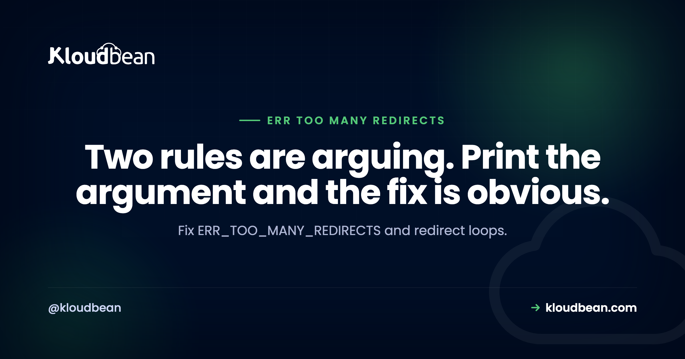

ERR_TOO_MANY_REDIRECTS: One Command Shows You the Loop

A redirect loop happens when two pieces of configuration disagree about where a URL should live, and neither will give way. Your browser follows the chain until it hits its limit, then stops and reports ERR_TOO_MANY_REDIRECTS. The encouraging part is that this is one of the most solvable errors you will meet, because the loop is fully visible from outside. One command prints the whole argument, and once you can see which two locations it is bouncing between, the cause is almost always immediately identifiable.
Run curl -sIL --max-redirs 10 https://example.com | grep -iE '^HTTP|^location' to print the loop. The pattern of alternating locations tells you the cause. If it bounces between http and https, either your proxy is not sending X-Forwarded-Proto or your SSL mode terminates TLS without passing that through. If it bounces between www and non-www, two canonical rules are fighting. On WordPress, check that siteurl and home agree with each other and with your actual URL.
Print the loop first
Do this before changing anything, because guessing at redirect rules while a loop is live is how people end up with four conflicting rules instead of two.
curl -sIL --max-redirs 10 https://example.com | grep -iE '^HTTP|^location'You will get something like this, and it is the whole diagnosis:
HTTP/2 301
location: https://www.example.com/
HTTP/2 301
location: https://example.com/
HTTP/2 301
location: https://www.example.com/
...That is two canonical rules disagreeing about www. Read the alternating pair and match it against this table:
| The loop bounces between | Cause | Fix |
|---|---|---|
http:// and https:// | App does not know it is behind HTTPS | Pass and trust X-Forwarded-Proto |
www and non-www | Two canonical host rules | Keep one, remove the other |
| Trailing slash present and absent | Two normalisation rules | Pick one convention |
| A login page and a dashboard | Session not persisting | Cookie domain, secure flag, session store |
| The same URL to itself | A rule matching its own target | Add a condition so it stops |
| Two different paths repeatedly | Application routing or a plugin | Application redirect logic |
Also useful for a quick count when you just want to know how bad it is:
curl -sIL -o /dev/null -w '%{num_redirects} redirects, final: %{url_effective}\n' https://example.comCause one: your app does not know it is behind HTTPS
This is the big one, and it explains most http-to-https loops. It is worth understanding properly because the same mechanism appears behind load balancers, CDNs, reverse proxies, and container ingress.
When TLS terminates at a proxy, the proxy decrypts the request and forwards it to your application over plain HTTP. From your application's point of view the request arrived unencrypted. So a perfectly reasonable "redirect all HTTP to HTTPS" rule fires, sending the visitor to the HTTPS URL. The proxy receives that, terminates TLS again, and forwards over plain HTTP again. Your application sees HTTP again and redirects again.
Nobody is misconfigured in isolation. The proxy is doing its job and the application is doing its job. The missing piece is that the proxy has to tell the application what the visitor actually used, and the application has to believe it.
Send the header from nginx:
location / {
proxy_pass http://127.0.0.1:3000;
proxy_set_header Host $host;
proxy_set_header X-Forwarded-Proto $scheme;
proxy_set_header X-Forwarded-Host $host;
proxy_set_header X-Forwarded-For $proxy_add_x_forwarded_for;
}Then trust it in the application, which is the half people forget:
// Express
app.set('trust proxy', 1);# Django
SECURE_PROXY_SSL_HEADER = ('HTTP_X_FORWARDED_PROTO', 'https')<?php
// WordPress: in wp-config.php, ABOVE the wp-settings.php require
if ( isset( $_SERVER['HTTP_X_FORWARDED_PROTO'] ) && $_SERVER['HTTP_X_FORWARDED_PROTO'] === 'https' ) {
$_SERVER['HTTPS'] = 'on';
}For Laravel, the TrustProxies middleware does this, and it needs your proxy in its trusted list to take effect.
One security note, because this header is a trust decision rather than a formality. Only trust X-Forwarded-Proto when the request genuinely comes through your own proxy. A client can send that header directly, so an application that trusts it unconditionally while also being reachable without the proxy can be told it is on HTTPS when it is not. Trust the proxy, not the header.
Cause two: an SSL mode that strips encryption
The CDN version of the same problem, and it comes up constantly. If a proxy is configured to speak plain HTTP to your origin while your origin redirects HTTP to HTTPS, you get the identical loop for the identical reason.
On Cloudflare this is the Flexible SSL mode, and it is the most common self-inflicted cause of this error. The fix is not a redirect rule, it is to stop terminating encryption at the edge: install a certificate on your origin and use Full (strict). Our error 525 guide covers that properly, including why a free Origin CA certificate is the straightforward route.
Diagnose it by comparing the proxied request with a direct one:
# Through the proxy
curl -sIL --max-redirs 5 https://example.com | grep -iE '^HTTP|^location'
# Straight to the origin
curl -sIL --max-redirs 5 --resolve example.com:443:203.0.113.10 https://example.com | grep -iE '^HTTP|^location'A clean single response from the origin and a loop through the proxy tells you the edge configuration is the problem, not your server.
Cause three: two canonical rules fighting
Somebody added a redirect to www. Later, somebody else added a redirect to non-www somewhere different: the other server block, an .htaccess file, an SEO plugin, or the application itself. Both are correct in isolation. Together they are a loop.
The fix is not to add a smarter rule. It is to find every place a canonical redirect is defined and leave exactly one.
# Server config
sudo grep -rniE "return 30[128]|rewrite .*(https|www)" /etc/nginx/
# Apache and .htaccess
sudo grep -rniE "Redirect|RewriteRule" /etc/apache2/ 2>/dev/null
find /var/www -name ".htaccess" -exec grep -lniE "RewriteRule|Redirect" {} \;Then check the application layer too, because a plugin or framework setting is invisible to those greps. On WordPress, an SSL or SEO plugin forcing a canonical host while the server also forces one is a very common pairing.
When you write the surviving rule, prefer a dedicated server block with return over a rewrite. It is faster, it cannot accidentally match its own target, and it is obvious to whoever reads it next:
server {
listen 443 ssl;
server_name www.example.com;
return 301 https://example.com$request_uri;
}Cause four: WordPress disagreeing with itself
WordPress stores its own address in two options, and it will redirect to enforce them. If they disagree with each other, or with what your server is serving, you get a loop.
wp option get siteurl
wp option get home
# Make them agree, with the scheme and host you actually serve
wp option update siteurl 'https://example.com'
wp option update home 'https://example.com'If the loop has locked you out of the admin, set them in wp-config.php instead, which overrides the database values:
define( 'WP_HOME', 'https://example.com' );
define( 'WP_SITEURL', 'https://example.com' );That is also the fastest way to break a loop while you work out which rule caused it, since it removes WordPress from the argument entirely. Once the site is reachable, remove the constants and fix the underlying disagreement if you would rather manage the URL from the admin.
The other WordPress classic is an SSL plugin. Plugins that force HTTPS are useful when nothing else does it, and harmful when your server already redirects and your proxy already terminates TLS. If you have a working server-level redirect, that plugin is a third opinion in a two-way argument.
Cause five: a login loop
Different shape, same symptom. You submit valid credentials, land on the dashboard, get sent back to the login page, and round again. The redirects are correct; the session is not persisting, so each request looks unauthenticated.
Four things to check, in order. The cookie domain, since a cookie set for www.example.com is not sent to example.com, which turns a canonical redirect into a logout. The Secure flag, because a secure cookie is not sent over plain HTTP, so an app that thinks it is on HTTP will never receive it, which loops back to cause one. The session store, if you have several application servers without shared session storage, so each request may land somewhere that has never seen this session. And cookie size, since a session cookie that has grown too large can be rejected outright, which is the same accumulation problem behind 400 Bad Request.
Shared session storage is what managed Redis is for, and it is the correct answer once you are behind a load balancer rather than pinning users to one server.
This is also the one variant where the standard advice actually works. Clearing cookies for the domain genuinely fixes a stale-session loop for that visitor, so it is worth suggesting to affected users while you fix the cause.
Redirect chains are a separate problem worth fixing
While you are in here, count your hops. A chain that resolves is not a loop, and it is still costing you.
curl -sIL -o /dev/null -w '%{num_redirects} redirects\n' http://www.example.com/old-pageEach hop is a full round trip before anything renders. Three hops on a mobile connection is real, measurable delay. The usual accumulation is http to https, then non-www to www, then old path to new path, each added by a different person at a different time. Collapse them so any entry point reaches the final URL in one redirect. One hop is the target and it is achievable with ordered rules.
A note on HSTS before you test
If you have sent an HSTS header, browsers will upgrade http to https themselves without asking your server, which changes what you observe while testing and can make a fix look ineffective. curl does not do this by default, which is another reason to trust it over the browser while diagnosing. And be careful enabling HSTS with a long duration before your HTTPS setup is genuinely correct, because browsers will remember the instruction for the period you specified and you cannot recall it.
The operational half of ERR_TOO_MANY_REDIRECTS
Look at the causes: a proxy not forwarding a header, TLS terminating without passing the scheme through, canonical rules defined in two places, and sessions with nowhere shared to live. Every one is infrastructure configuration rather than application logic.
On Kloudbean, nginx comes configured with the forwarded headers your framework expects, free SSL is issued and renewed so terminating TLS properly at the origin is the default rather than a project, Cloudflare is available as a paid add-on and included for enterprise accounts so the edge and the origin get set up together, and managed Redis is in the same dashboard for shared sessions. Staging exists for exactly this kind of change, because redirect rules are the classic thing to get wrong on a live site.
The honest boundary: nobody else can decide whether your canonical host has www, and an SSL plugin fighting your server config is a plugin decision. What managed configuration removes is the proxy-and-header half, which is where most of these loops start.

Threads worth pulling
For the SSL mode that causes the edge version of this, error 525 and Cloudflare error codes. On the proxy configuration itself, the nginx reverse proxy guide. For certificates, fixing SSL certificate errors and custom domain and SSL. On shared sessions, managed Redis hosting. And on the cookie growth that breaks logins, 400 Bad Request.
Own the server. Skip the server admin.
Servers, managed databases, object storage, and a built-in load balancer live behind one login, on the cloud and region you pick. The stack, SSL, patching, and backups are handled for you.
- ✓ Seven cloud providers
- ✓ Managed databases
- ✓ Object storage
- ✓ Automatic backups
- ✓ Free SSL
- ✓ Git deploy
- ✓ Free migration assistance
FAQ
What causes ERR_TOO_MANY_REDIRECTS?
Two pieces of configuration disagreeing about a URL's correct location, so each sends the visitor to the other. The most common version is an application that does not know it is behind HTTPS, because TLS terminated at a proxy and the scheme was not forwarded, so its redirect-to-HTTPS rule fires on every request. Others are duplicate canonical host rules and mismatched WordPress site URLs.
How do I see what the redirect loop is doing?
Run curl -sIL --max-redirs 10 https://example.com | grep -iE '^HTTP|^location'. It prints each status and location in the chain, and the alternating pair identifies the cause directly. Use curl rather than the browser, since HSTS can make a browser upgrade requests itself and hide what your server is really sending.
Why does my site redirect between http and https forever?
Because your application believes each request arrived over plain HTTP. When TLS terminates at a proxy or CDN, the request reaches your app unencrypted, so its HTTPS redirect fires, and the cycle repeats. Send X-Forwarded-Proto from the proxy and configure your framework to trust it, for example app.set('trust proxy', 1) in Express.
Does Cloudflare Flexible SSL cause redirect loops?
Yes, and it is a very common cause. Flexible mode speaks plain HTTP to your origin, so any server-side redirect from HTTP to HTTPS loops indefinitely. The fix is to install a certificate on your origin and switch to Full (strict) rather than adding redirect rules. A free Cloudflare Origin CA certificate is the straightforward route.
How do I fix a redirect loop in WordPress?
Check that siteurl and home agree with each other and with the URL you actually serve, using wp option get siteurl and home. If you are locked out of the admin, define WP_HOME and WP_SITEURL in wp-config.php, which overrides the database and usually restores access immediately. Then check whether an SSL or SEO plugin is also forcing a canonical URL that your server already handles.
Why do I get a loop between the login page and the dashboard?
The redirects are right and the session is not persisting, so every request looks unauthenticated. Check the cookie domain, since a cookie set for the www host is not sent to the bare domain, the Secure flag, since a secure cookie is not sent over plain HTTP, and whether several app servers share a session store. Clearing cookies fixes it for one visitor but not the cause.
Should I worry about redirect chains that do resolve?
Yes, though as a performance issue rather than an outage. Each hop is a full round trip before anything renders, and chains accumulate over time as different people add rules. Count them with curl -sIL and the num_redirects write-out variable, then collapse the rules so any entry point reaches the final URL in a single redirect.
Is it safe to trust the X-Forwarded-Proto header?
Only when the request definitely came through your own proxy. Clients can set that header themselves, so an application that trusts it unconditionally while also being directly reachable can be convinced it is on HTTPS when it is not. Trust the proxy, restrict direct access to the application, and configure your framework's trusted-proxy list rather than accepting the header from anywhere.